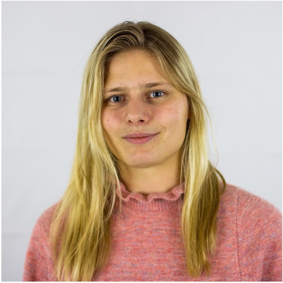

Master's thesis at SEB. Framed foreign exchange trade execution as a Markov decision process and trained a reinforcement learning agent to minimise market impact. Implemented from scratch in Python and PyTorch.
Linn Rydberg
Hi, I'm Linn—welcome!
I'm an applied mathematician (and proud math nerd) fascinated by AI, especially reinforcement learning. I care deeply about both the technical potential of these systems and the responsibility of developing them in a way that is safe and beneficial to society.
This website is a place where I aim to share my thoughts, projects, and explorations in machine learning and beyond.

I'm an applied mathematician currently working as a Quantitative Trader at IMC Trading in Amsterdam. My work sits at the intersection of mathematics, machine learning, and markets.
My master's thesis — written at SEB, Sweden's largest bank — explored reinforcement learning for optimal FX execution, implemented in Python and PyTorch. It's the kind of problem I find endlessly interesting: using sequential decision-making to operate under uncertainty in real, noisy systems.
Before that, I spent several years in political advisory and non-profit leadership, which taught me how to communicate ideas clearly and build things from nothing.
linn.rydberg99@gmail.com
London, United Kingdom
Education
2019 – 2025
M.Sc & B.Sc in Applied Mathematics
Lund University — Lund, Sweden
Exchange semester at ETH Zürich.
2025
Master Thesis at SEB
Skandinaviska Enskilda Banken — Stockholm, Sweden
Reinforcement Learning for Optimal Execution in Foreign-Exchange Markets. Designed and implemented a reinforcement learning agent in Python and PyTorch to optimise foreign exchange trade execution.
Professional Experience
2025 – 2026
Quantitative Trader
IMC Trading — Amsterdam, Netherlands
Applied options theory and quantitative modelling. Leveraged Python (pandas) and SQL for pricing, risk management, and strategy optimisation.
2018 – 2021
Policy Advisor
Liberal Party, City of Malmö — Malmö, Sweden
Main advisor to the Deputy Mayor. Responsible for policy development, speech writing, and media relations.
Internships
Summer 2024
Tech Consulting Intern, AI & Data
EY (Ernst & Young) — Stockholm, Sweden
Used Power BI, Python, and SQL to analyse data, automate workflows, and deliver insights for clients.
Summer 2023
Summer Intern, Embedded Development
ASSA ABLOY — Landskrona, Sweden
Developed embedded software in Python; version control with Git.
Summer 2022
Summer Intern
E.ON Energy Networks — Malmö, Sweden
Conducted an interview study on improving internal IT systems.
Nothing here yet — writing takes time.